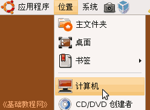
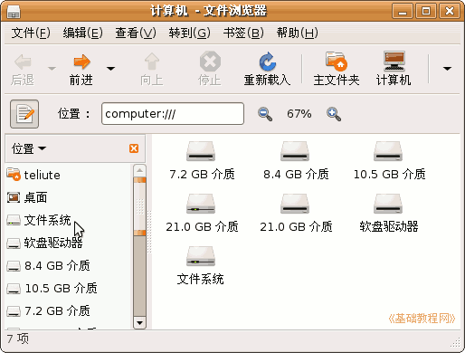
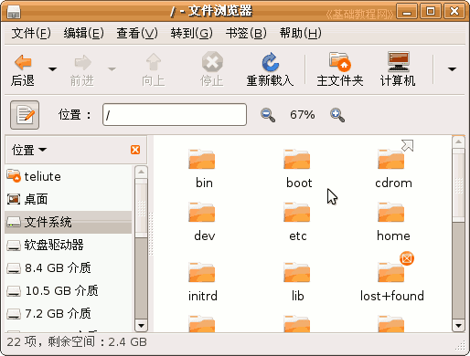
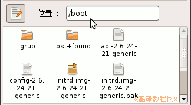
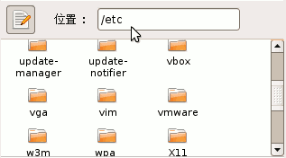
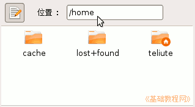

电脑操作基础
作者：TeliuTe 来源：基础教程网
十五、文件系统 返回目录 下一课在Ubuntu系统中，各种数据是用文件来管理的，文件放在对应的目录中，下面我们来看一个练习；
1、根目录
1）所有的文件都在一个总目录当中，这个目录就是根目录，用 / 表示，对应的位置是“文件系统”；
2）点菜单“位置－计算机”，打开一个文件浏览器窗口；

3）这时出来窗口里，包含各个分区和文件系统，相当于Windows的“我的电脑”文件夹，
在窗口左边栏里，点“文件系统”，也可以在窗口里双击图标；

4）这时出来的就是根目录文件夹的内容，里面包含各个系统文件和文件夹；

5）记住里面的几个重要文件夹，boot 是存放启动文件的文件夹，etc 是存放配置文件的文件夹，home是存放用户文件的文件夹；
  
本节学习了在Ubuntu中根目录和文件系统的基础知识，如果你成功地完成了练习，请继续学习下一课内容；
本教程由86团学校TeliuTe制作|著作权所有
基础教程网：http://teliute.org/
美丽的校园……
转载和引用本站内容，请保留版权信息和本站链接。